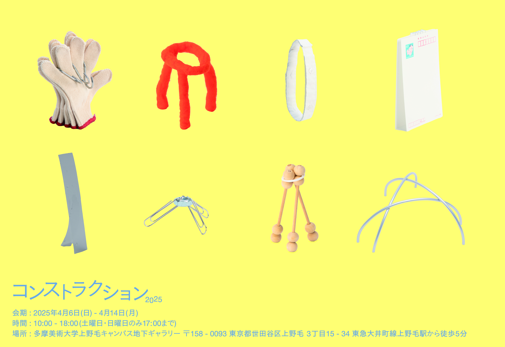
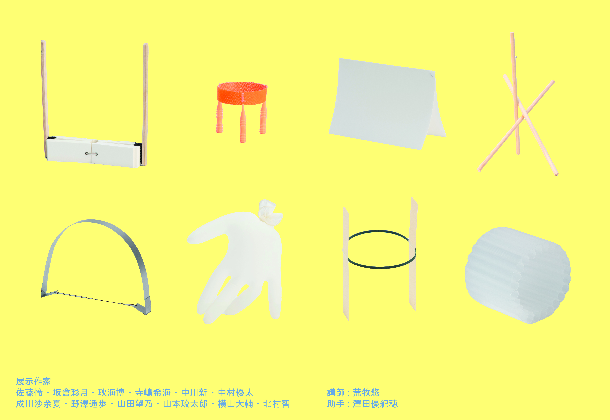
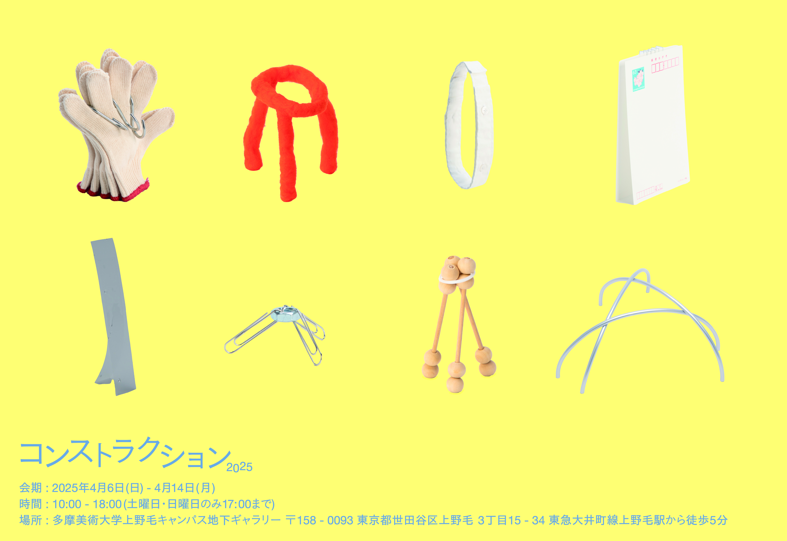
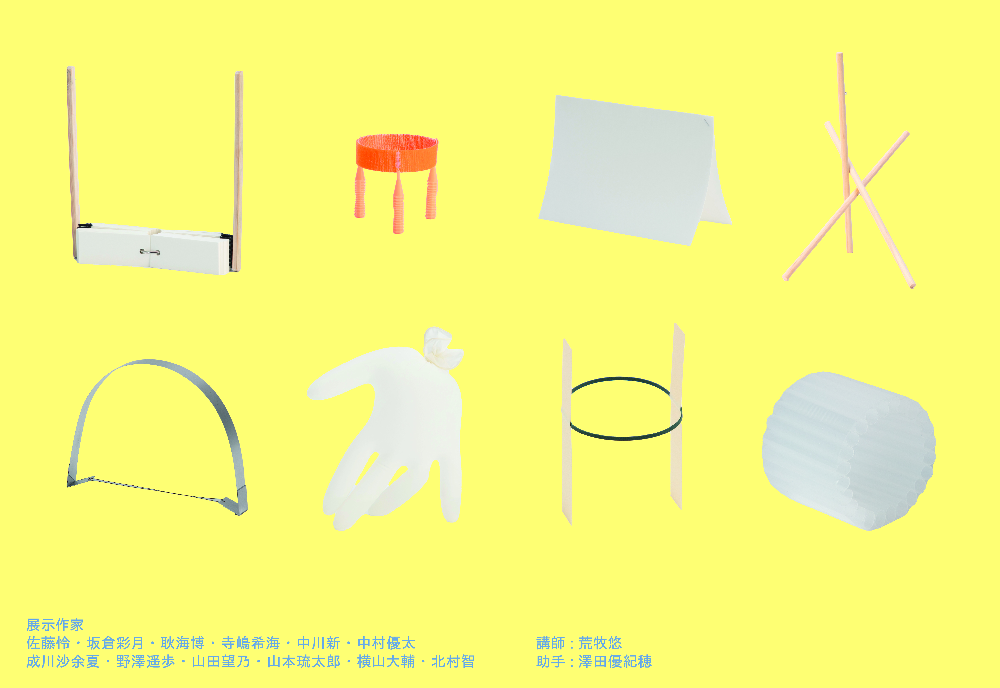
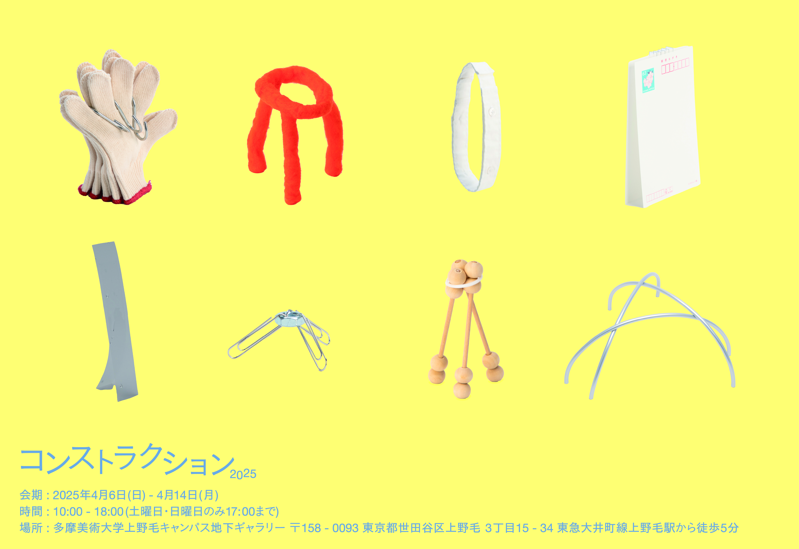
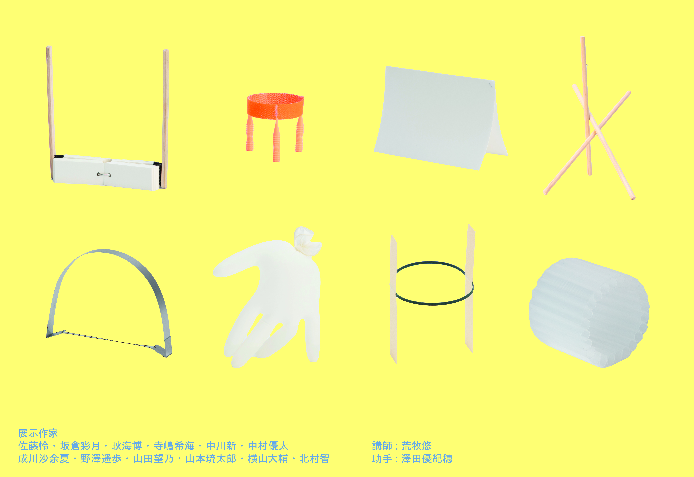

コンストラクション2025・お土産DM
演習授業コンストラクションの学内成果展で来場者用に配布したお土産DMのデザイン。
[Graphic Design]
D.P : Nozomi Terashima
2025
 



演習授業コンストラクションの学内成果展で来場者用に配布したお土産DMのデザイン。
[Graphic Design]
D.P : Nozomi Terashima
2025

